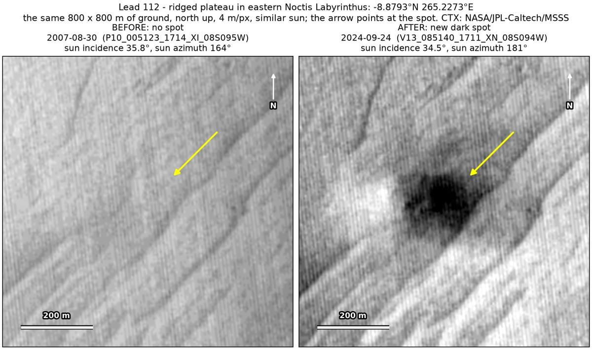
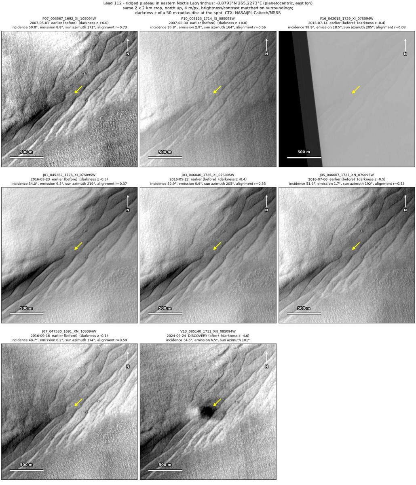
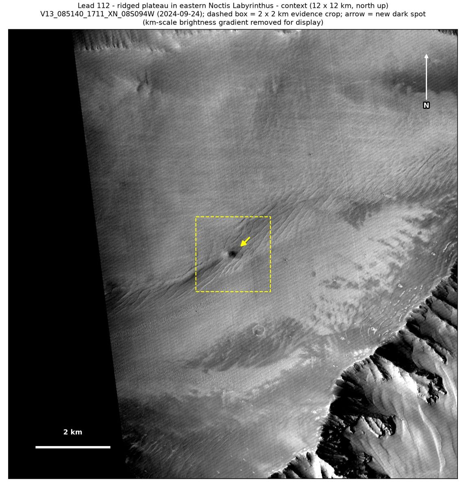

Professor of Mathematics
Paata Ivanisvili
Department of Mathematics, University of California, Irvine

← Possible new impact sites on Mars
Candidate 112: Ridged plateau in eastern Noctis Labyrinthus
Promising · roughly 60%

What changed. A diffuse dark spot about 160 m across, with a darker core, appeared on a ridged plateau in eastern Noctis Labyrinthus between September 2016 and September 2024. So far only one CTX image shows it.
Why it may be a new impact. Five earlier images, from 2007 and 2016, show plain ground there, including one of August 2007 taken under almost the same sun as the September 2024 image. Subtracting an earlier image from the later one shows the strongest change at the spot, with no other new dark mark and no tracks in the surrounding 5 × 5 km, and a roundish new dark spot with a darker core, not drawn out downslope, fits the blast zone of a small new crater.
- Location
- 8.879° S, 265.227° E (94.773° W)
- Absent
- 1 May 2007, 30 August 2007, 22 May 2016, 6 July 2016 and 16 September 2016
- Present
- 24 September 2024
- Size
- Diffuse dark spot about 160 m across (212 × 158 m), with a darker core
- Confidence
- Promising candidate: roughly 60% likely to be a new impact.
- Caveat
- Only one image shows it, and a short one, so an image defect cannot be fully ruled out, although the spot is a smooth dip in brightness spread over about 40 × 30 image pixels. A dark mark nearby is faint in the earlier images, so it does not show that they would have caught a spot. No image from the high-resolution HiRISE camera covers it; the nearest ends 5.2 km away. Like every candidate here, it is unconfirmed: see the caveat.

